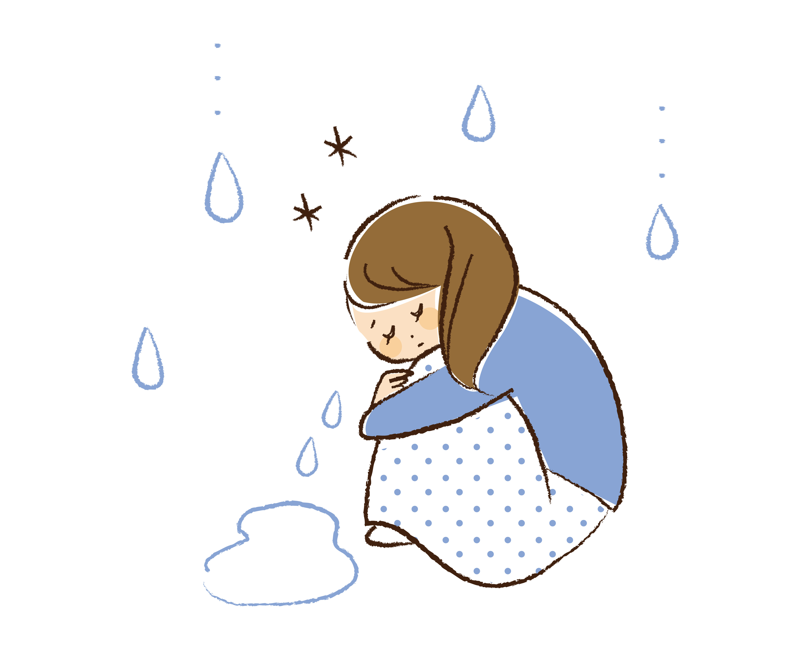

正常な生理と異常な生理
生理にも正常な場合と異常な場合があります。
異常な生理が続く場合には、何かしらの病気が隠れている場合もあるので、少しでも心配なところや、不安なことがある場合は婦人科に受診しましょう。
生理周期
生理の周期とは、開始日から次の生理が始まる日の前日までの期間のことを言います。
正常な場合、だいたい25日〜38日間で、2~5日間ずれることもあります。また、ストレスや生活習慣によって1週間ほどずれることもあります。
異常な場合、1ヶ月に2〜3回と高頻度で生理がくる『頻発月経』や、逆に1ヶ月以上来ない『生理不順』等があります。

生理期間と出血量
正常な生理中の期間はだいたい3〜7日間です。出血量は約20ml~140mlです。
これ以上、もしくはこれ以下の期間や量の場合はそれぞれ『過多月経』『過少月経』の可能性があります。
『過多月経』は、8日間以上続くことがあったり、眠れないほどの出血量や1時間以内にナプキンを交換しないといけない出血量、レバー状の大きな血の塊が出ることがあり、ホルモンバランスの乱れや、子宮筋腫などの子宮の病気の可能性もあります。
『過小月経』は、3日間以内に終わることがあったり、2日目で1日中ナプキンの交換が必要ないほどの少量出血の場合、生理が止まってしまう『無月経』の前兆症状の可能性もあります。
早めに婦人科に受診しましょう。
生理痛
正常な生理痛は、日常生活が普段通りに送れて、市販の鎮痛剤を飲んだら痛みが和らぐ程度です。
日常生活に支障をきたす生理痛は異常で、『月経困難症』という病気の可能性が高いです。それを知らずに生理痛に悩み、苦しんでいる女性はたくさんいます。市販の鎮痛剤はお腹に優しい作りになっていますが、鎮痛剤を飲めば落ち着くと思い、たくさん服用してしまうと、効果が減ってしまったり、胃酸過多になって吐き気や腹痛を起こしたり、胃潰瘍という病気になってしまうこともあります。少しでも生理痛に悩んでいる場合は婦人科に相談してみましょう。